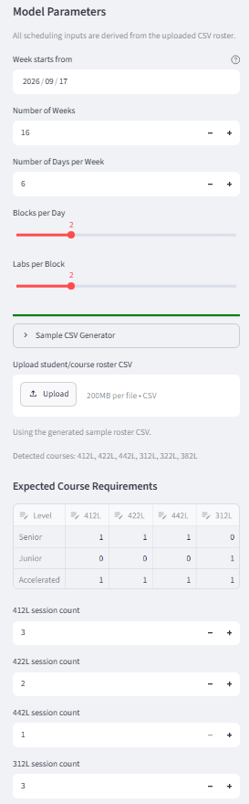
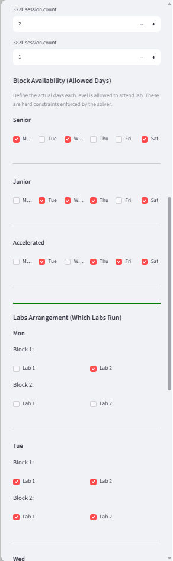
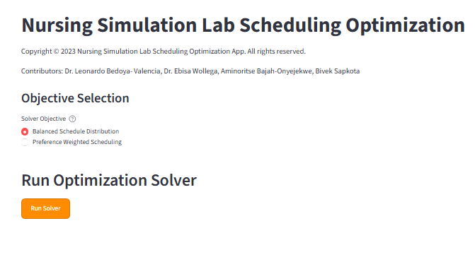
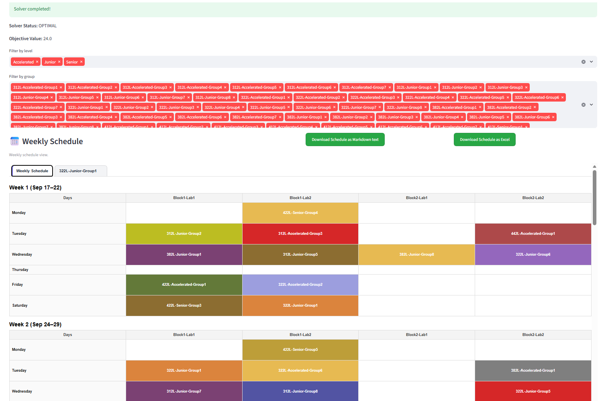

How the scheduling model works and how to run it, step by step.
This app builds a weekly lab schedule for nursing students automatically. You upload a roster (who is taking which course, at what level and in what group), set a few scheduling parameters (weeks, days, blocks, labs), and the app uses a mathematical solver to assign every course session to a day/block/lab slot without conflicts.
The scheduler is a constraint optimization model, not a simple lookup table. It works in three phases:
You choose the solver's goal on the main screen before running:
| Objective | What it does |
|---|---|
| Balanced Schedule Distribution | Minimizes total usage of later blocks in the day, which naturally spreads sessions across the earliest available blocks first, keeping the schedule compact and evenly distributed. |
| Preference Weighted Scheduling | You assign a weight to each week (higher number = less preferred). The solver minimizes total weight used, pushing sessions toward the weeks you marked as more preferable. |
These rules are always enforced — the solver will never violate them:
| Constraint | Plain-English meaning |
|---|---|
| Required session count | Each group must receive exactly the number of lab sessions configured for every course it is enrolled in (e.g. a 3-session course gets scheduled 3 separate times). |
| One course per group per day | A group cannot attend two different course sessions on the same day. |
| Allowed days (Block Availability) | Each level (Senior/Junior/Accelerated) can only be scheduled on the days you marked as available for that level. |
| Lab availability (Labs Arrangement) | A session can only be placed in a day/block/lab slot that you marked as "running" (open) that week. |
| One course per slot | Two different groups cannot use the same lab at the same day/block/lab slot. |
| One session per group per slot | A single group cannot be in two places (two courses) in the same slot. |
The app needs one CSV file describing your students, their level/group, and which courses they take.
| Column | Description |
|---|---|
Student_Name | Student's name or ID (used only for the student list shown when you click a scheduled course). |
Student_Level | One of Senior, Junior, or Accelerated. |
Group | The lab group the student belongs to within their level, e.g. Group1, Group2. |
| One column per course | e.g. 412L, 422L, 312L. Use 1 if the student is enrolled in that course, 0 otherwise. |
Student_Name,Student_Level,Group,412L,422L,442L,312L,322L,382L Laati,Senior,Group1,1,0,1,0,0,0
| Input | Purpose |
|---|---|
| Week starts from | Calendar date the first week begins — used only to label weeks in the output. |
| Number of Weeks | How many weeks the schedule should cover. |
| Number of Days per Week | 1–7 scheduling days per week. |
| Blocks per Day / Labs per Block | How many time blocks exist per day, and how many parallel labs exist per block. |
| Expected Course Requirements | Editable matrix confirming which level should take which course. |
| Course session count | How many separate lab sessions each course requires per group. |
| Block Availability | Checkbox grid — which days each level (Senior/Junior/Accelerated) is allowed to attend lab. |
| Labs Arrangement | Checkbox grid — which labs are actually open/running in each day/block. |
| Objective + Weekly Preference Weights | See Objective section above. |



Once the solver finishes, you'll see:
OPTIMAL/FEASIBLE means a valid schedule was found; INFEASIBLE means no valid schedule exists with the current settings.Course-Level-Group. Click a cell to see the list of students in that session.
Weekly schedule table with colored course cells

Tabbed list of students for the selected course session.
| Symptom | Likely Cause / Fix |
|---|---|
| "No Solution Found" | Too many required sessions for the available days/labs. Add more allowed days, open more labs, or reduce session counts. |
| Course columns not detected | Make sure the CSV header row includes Student_Name, Student_Level, Group, and one column per course with 0/1 values. |
| Schedule looks unchanged after edits | A yellow warning banner appears when inputs changed — click Run Solver again to refresh results. |
| Wrong students appear under a course | Check the Expected Course Requirements matrix and the course 0/1 values in your roster CSV. |